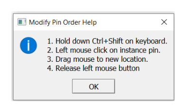
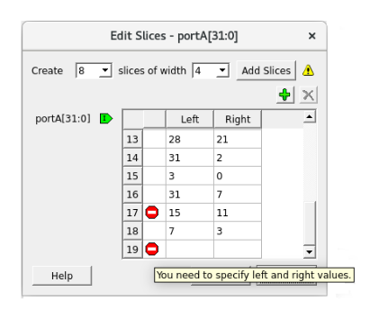

After placing the components in your SmartDesign canvas, you now need to create pins and ports to connect the various instances to complete your design.
Each pin or port has a direction and a type. Direction of the regular ports (non-Bus Interface ports) can be input, output, and bidirectional (inout).
The following is a list of types of pins or ports:
Scalar: Single unit-level
signal
Bus: Array of scalar
ports. The range of the bus ports are indicated by square brackets
[nFirst:nLast]. For Example, busName[3:0].
Slice: Slice is a part of
a bus port. A bus slice is of any range size within the bus range. For example,
sliceName[0], sliceName[2:0].
Bus Interface (BIF): A Bus
Interface is a bundle of scalar or bus ports that has functional meaning to it. BIF ports
have characteristics such as functional types and roles that define how two Bus Interfaces
can connect to one another. SmartDesign provides a rich set of AMBA Bus
Interfaces–AXI, AXI4, AXI4Stream,
AHB, AHBLite, and APB3 – to help create
easily AMBA sub-systems. It also provides Microchip specific Bus Interface types for easy
connectivity between Microchip hardware components.
Scalar ports or pins in SmartDesign may have a PAD characteristic property. A pin or port with a
PAD property must be connected to a top-level port of the design. PAD ports eventually assign
to a package pin. In SmartDesign, these ports are automatically promoted to the top-level and
can be modified, if needed.
For better organization of the instance pins, you can create groups. Groups are displayed on an instance with a Group pin that is just a visual representation and cannot be connected. Any pin can be added or removed from the group. Groups can be collapsed to hide member pins.
After placing the components in your SmartDesign canvas, you now need to create pins and
ports to connect the various instances to complete your design.
Each pin or port has a direction and a type. Direction of the regular ports (non-Bus
Interface ports) can be input, output, and bidirectional (inout).
You can create a pin or port in either of the
following ways:
On the menu, click SmartDesign > Add Port
On the SmartDesign toolbar, click
Add Port
Result: The Add Port dialog box
appears.
Figure 5-10. Add Port dialog box
Enter an appropriate and unique name for the port
in the Name box. You can specify a bus port by indicating the bus
range directly into the name using brackets [ ]. For example, mybus[3:0].
Important: If the port name violates
HDL naming rules, an error message is printed in the Log window,
and the new port is not created.
Choose the pin or port type that you want to
create as per the following table and then click OK. The chosen port
type is created in the SmartDesign canvas.
Pin or Port Type
Representation
Purpose
Input
-
Unconnected
- Connected
Input port for operating with inputs. By default, the input pins and ports
are placed on the left side of the canvas.
Output
-
Unconnected
- Connected
Output port for operating with outputs. By default, the output pins and ports
are placed on the right side of the canvas.
Bi-directional (inout)
-
Unconnected
- Connected
Bi-directional port for operating as an input or an output pin or port. By
default, the bi-directional pins and ports are placed on the right side of the
canvas.
Important: You can choose to move the
ports to any location of your choice in the SmartDesign canvas.
Tip: To remove a port from the
top-level, right-click the port, and select Delete from the right-click
menu or select the port and press the Delete key.
If the outputs of one component (instance A) communicate with the inputs of another component
(instance B) and otherwise, nets may intersect with each other and the view may be cluttered.
To prevent this, the Modify Pin Order functionality allows you to
modify the default pin placement of the instance.
To modify the default pin placement of the instance:
Right-click the component and select Modify Pin Order > Modify Pin Order from the right-click menu. The Modify Pin Order Help
dialog box appears.
Figure 5-11. Modify Pin Order Help Dialog
Box

Follow the instructions in Modify Pin Order Help dialog box to move
the pin.
A pin that has been moved away from default locations is identified by a bold
arrowhead. An inward-pointing arrowhead indicates an input pin and an outward-pointing
arrowhead indicates an output pin. Inout pins do not have an arrowhead when they are moved
away from the default locations (right side of instance).Figure 5-12. Connections Between Two Instances with Regular Pin
OrderFigure 5-13. Connections Between Two Instances with Modified Pin
Order
To reset the instance pin order to its
default order, right-click the instance, and select Modify Pin Order > Reset Pin Order from the right-click menu.
Important: The Modify Pin
Order operation is unavailable when the instance is expanded in place. The
modified pin order might not be preserved when an instance is expanded but retains the set
order when folded.
When one or more pins or ports are selected, you can use the right-click menu to perform the
following operations on the ports and pins.
Operation
Action
Connect
The Connect command connects the selected pins and ports
with a net. If there is a net selected, it is used to make the connection. This is the
only pin or port action that takes selected nets into account. If the connection is
not possible, an error message is printed in the Log window. A
connection is established only if all the selected objects can be connected.
Disconnect
The Disconnect command disconnects all the selected
non-pad pins or ports from their attached net.
Promote to Top-Level
The Promote to Top-Level command is available to all
non-PAD pins. It creates a port and a net connecting the port to the pins or slices.
If a port with the same name already exists, a new unique port name is created.
For
example, if a BIF (myBIF) pin contains a pin
(myPort), then the top-level myPort is named
myBIF_myPort after the myBIF pin is promoted to
the top level.
Go to Driver
The Go to Driver command zooms onto the driver of the
selected pin or port. The Go to Driver command is not available
for output pins and input ports. The driver cannot be an inout.
Magnify Pin
Double-click a pin/port or right-click and select Magnify
Pin to zoom into the pin/port connection. The Magnify
Pin window shows the specified pin/port connections.
If the pin has a
fanout of more than one, the number beside the + sign on the
right shows the total fanout count.
Click the + sign to
see all the fanouts of the pin. You can double-click the net, pin, port, or instance
inside the Magnify window to zoom and select the
item.
Modify/Rename
The Modify or Rename command opens
a Modify Port dialog box. You can change the port name and the
range of the port.
Important:
All slices of the bus are
deleted if the range is changed.
When renaming BIF port, all the
member ports that have BIF name prefix are renamed.
Delete
The Delete command deletes all the selected items that can
be deleted: slices, user created groups, group members, and ports.
The
Delete command deletes all the selected items, even if the
selected items are of different types. When a group member is deleted, the member is
deleted from the group only. The actual pin is not deleted.
Mark Unused
This option is available to the output pins (scalar, bus, and BIF) of an
instance. The Mark Unused command allows you to show the output
pins that are not being used in the design and must not be flagged as a warning when
generating the design or running the DRC operation.
Invert
The Invert command inverts the input or output scalar pin
and port. A bubble is added to indicate inversion.
Tie High
The Tie High command connects the pin (scalar and bus) to
a logical 1. For a bus pin, this action deletes all slices. For a group, this action
is applied to all non-output member pins in the group.
Tie Low
The Tie Low command connects the pin (scalar and bus) to a
logical 0. For a bus pin, this action deletes all slices. For a group, this action is
applied to all non-output member pins in the group.
Tie Constant
The Tie Constant command is available only to bus pins and
slices (except single-bit slice). It opens the Tie to Constant dialog box for a
constant value in HEX to be entered for the bus pins and slices.
Clear Attributes
The Clear Attributes command clears the pin attributes
(Tie to High, Low, Constant, Inversion, or Marked Unused).
Highlight
The Highlight option opens a menu with multiple highlight
color selections. Select a color to highlight the selected items. If any items are
already highlighted, then choosing a different color highlight changes from the
previous highlight color. This option is available when a single or multiple
instances, nets, and ports are selected.
If you highlight an instance, it
automatically highlights the non-highlighted pins of the instance. Click the
Unhighlight all icon () in the
toolbar to remove the highlight color of all highlighted design objects, including
highlighted nets. The Highlight option is also available in
the right-click menu of the low-level instances in the Expanded Inplace
view.
Bus and Slice operations
When a bus, slice pins, or ports are selected, the right-click menu in addition
to regular pin actions have additional commands. For more information, see 5.4.4 Working with Bus and Slice.
Add Pin to New Group and Add Pin to
Group
This menu item is available to instance pins. When a group is selected,
right-click a pin and choose Add Pin to Group to add the pin to
the selected group. If no group is selected, the Add Pin to New
Group command is available and creates a new group with the default
group name, such as Group, Group_1,
Group_2, Group_3, and all the selected
pins are added to the newly created group.
A pin group is expanded to display the
member pins or is collapsed to hide the member pins. If a group is collapsed, pins
that are not connected to nets or have attributes (tied low or high, tied to
constant, and marked unused) are hidden.
Rename (Group)
Group pins, unlike other instance pins, can also be renamed. Right-click
Group and choose Rename. The
Rename Group dialog box appears. You can choose to change the
name of the group in this dialog box and click OK to apply the
changes.
If an invalid name is entered or a pin with that name already exists,
then an error message is printed in the Log
window.
You can perform the following operations on a Bus or Slice using the right-click menu
options:
Flip Bit
Order: This command is available only for slices. This option allows you
to flip the slice range. For example, mySlice[10:0] is flipped to
mySlice[0:10] of the slice. All connection or tieoff
information and presentation information is retained.
Create Slice:
This command opens a menu of slice options that can be created from the bus pin or
ports. The custom slice(s) option can be used to create any slice or bit combination
of your choice. For example, using a 32-bit bus with the Custom Slices option allows
you to create any slice or bit combinations (For example, a slice of 10 bits and
another slice of 22 bits). To make it convenient to create slices, common slice
ranges for the selected bus are listed in the list. For example,
32 slices of width 1
16 slices of width 2
8 slices of width 4
4 slices of width 8
2 slices of width 16
Figure 5-14. Slice Creation for a
32-Bit Bus
The directions of the slices (input or output) are indicated by an
arrowhead and match the bus pin or port direction. On a bus port, the slices are
placed in a column behind the bus port.
Important: If slices
existed before, the predefined slices are created and the existing slices are
deleted before creating the new ones.
Custom Slices:
This command opens the Add Slice(s) dialog box for entering a
list of slices.Figure 5-15. Add Slices Dialog Box If these slices are all valid, they are added to the bus. If the slices are
not valid (For example, out-of-range slices, overlapping slices for input pins
(output ports), or existing slices), the error is printed in the
Log window. The dialog box supports any separator
character except colon because the colon is used to specify a range. No characters
other than the colon are allowed to be adjacent to the two-range indices.
Tip: Creating a Custom Slice
does not delete any pre-existing slices.
Edit Slice:
This command opens the Edit Slices dialog box. You can choose
to delete, modify, and create a new slice, if required.Figure 5-16. Edit Slices Dialog Box
Use the dialog box to change the range of the bits, add a slice, or delete
a slice. If you specify invalid range values, an error icon appears in the
Edit Slices dialog box. Hover your cursor over the
error icon to display the error message.Figure 5-17. Edit Slices - Tooltip and Error Message

Pins to
Expose: This command opens the Pins to Expose
dialog box displaying all the Bus Interface pins that can be
exposed or hidden. Figure 5-18. Pins to Expose Dialog
Box
In the dialog box, you can check the pins in the BIF that you want to
expose and deselect the ones that you want to be hidden. Hidden BIF pins are not
visible in the SmartDesign canvas.
Important: Not all pins can
be exposed. If a BIF pin is already connected, none of the input pins can be
exposed. If a BIF pin is not connected, every item in the menu can be
exposed.